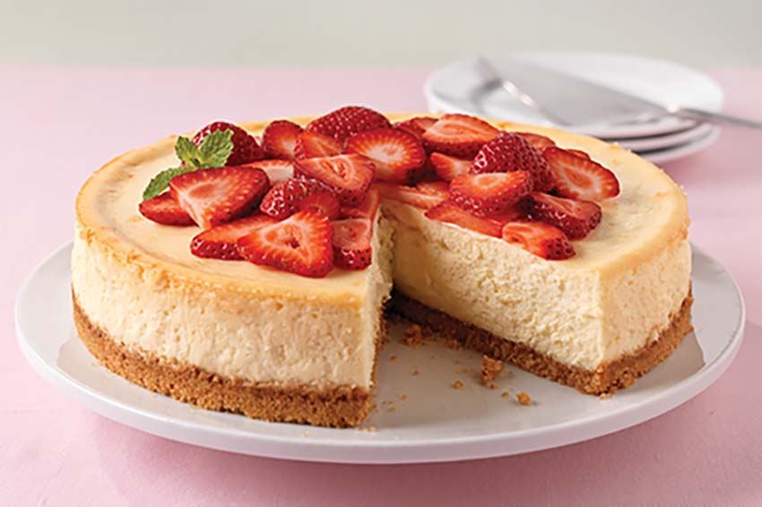

Philadelphia Classic Cheesecake
Prepare this rich, creamy PHILADELPHIA Classic Cheesecake today!
Ingredients
- 1 ½ cups graham cracker crumbs
- 3 Tsp. sugar
- ⅓ sugar
- 4 pkg. (8 oz. each) PHILADELHIA Cream Cheese, softened
- 1 cup sugar
- 1 tsp. vanilla
- 4 eggs
Steps
- Heat overn to 325°F.
- Combine graham crumbs, 3 Tbsp. sugar and butter; press onto bottom of 9-inch springform pan.
- Beach cream cheese, 1 cup sugar and vanilla with mixer unter blended. Add eggs, 1 at a time, mixing on low speed after each just until blended.
- Bake 55 min. or until cneter is alost set. Run knife around rim of pan to loosen cake; cool before removing rim. Refrigerate cheesecake 4 hours.